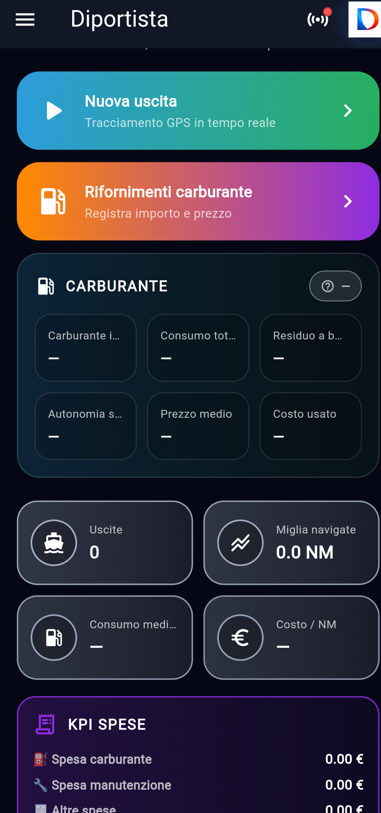
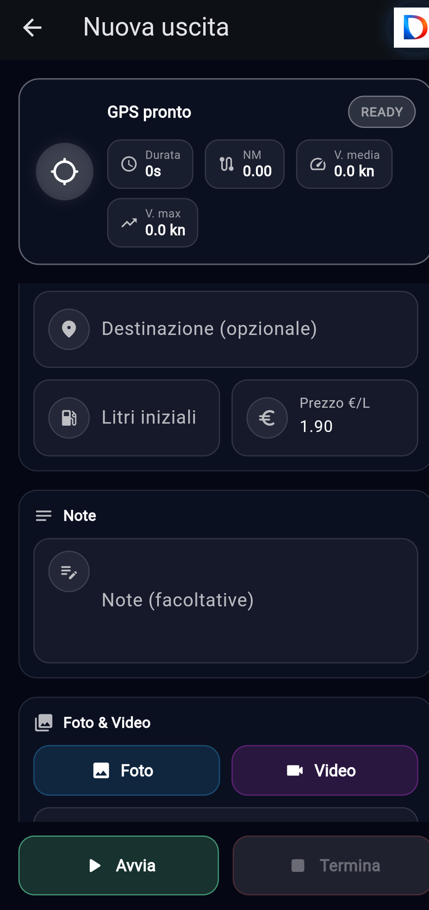
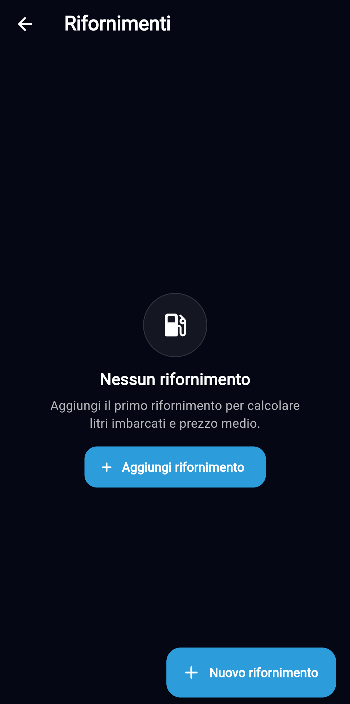
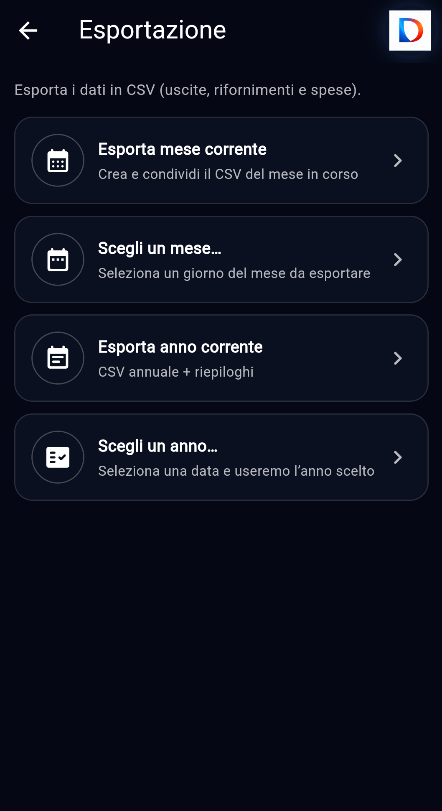
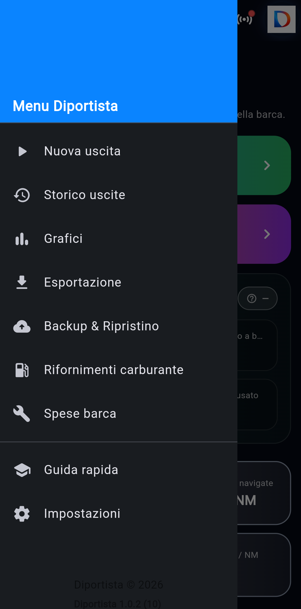
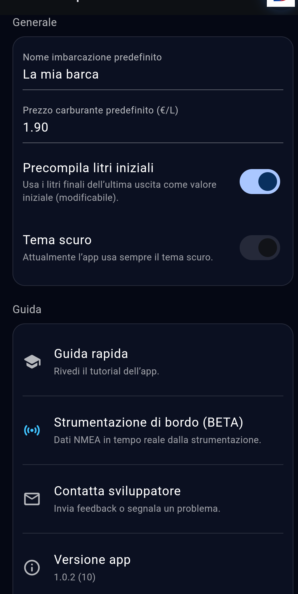

Registro uscite
Salva ogni navigazione con informazioni chiare e ordinate, così da costruire uno storico reale della vita della tua barca.
Diportista ti aiuta a registrare navigazioni, monitorare carburante, tenere sotto controllo costi e consumi, costruire lo storico della tua barca e valorizzare ogni uscita in modo semplice, elegante e professionale.

Una piattaforma pensata per trasformare i dati della tua imbarcazione in informazioni utili, leggibili e sempre disponibili.
Salva ogni navigazione con informazioni chiare e ordinate, così da costruire uno storico reale della vita della tua barca.
Monitora rifornimenti, prezzo medio, residuo e costo per miglio per avere una visione concreta dei consumi.
Leggi a colpo d'occhio i numeri più importanti: spese, medie, andamento stagionale e indicatori utili all'uso quotidiano.
Consulta rapidamente le uscite già fatte, confronta periodi diversi e mantieni ordinata tutta la cronologia della barca.
Trasforma le tue uscite in contenuti eleganti e condivisibili, con uno stile moderno o tecnico.
Sblocca strumenti avanzati, maggiore profondità di analisi e una gestione ancora più completa del tuo logbook nautico.
Alcune viste principali di Diportista. Puoi sostituire in qualsiasi momento queste immagini con screenshot più aggiornati.





Qui puoi inserire il link al tuo video tutorial YouTube.
Inserisci qui il tuo tutorial YouTube
Quando hai il link del video, sostituisci il bottone qui sotto con il tuo URL.
Apri il tutorialPorta a bordo un sistema moderno per registrare uscite, carburante, spese e dati della tua imbarcazione. Semplice da usare, elegante da consultare.
Il QR code a destra apre direttamente la pagina App Store di Diportista.

Tutte le pagine legali principali del progetto sono disponibili qui sotto.